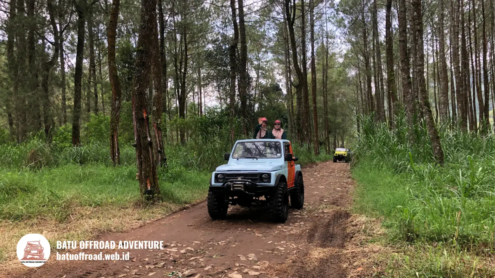

Wisata Coban Talun Batu: Panduan Lokasi, Aktivitas & Itinerary
Wisata Coban Talun berada di kawasan pegunungan Kota Batu, Jawa Timur, yang dikenal lewat air terjun dan udara sejuknya. Wilayah ini umumnya dicapai dari Kota Batu, Malang, atau Surabaya melalui jalur darat, dan di sekitarnya tersedia aktivitas seperti fun offroad, paintball, dan outbound.
- Coban Talun adalah destinasi wisata alam di kawasan pegunungan Kota Batu yang dikenal dengan air terjunnya.
- Lokasi dapat dicapai dari Kota Batu, Malang, dan Surabaya lewat jalur darat, dengan waktu tempuh yang tergantung lalu lintas.
- Aktivitas di sekitarnya meliputi fun offroad, paintball, outbound, camping, dan trekking, tergantung penyedia layanan.
- Itinerary satu hari dapat disusun dengan membagi pagi, siang, dan sore secara realistis.
- Detail jam buka, tiket, dan harga wajib dikonfirmasi ke pengelola dan operator.
Apa Itu Wisata Coban Talun?
Wisata Coban Talun adalah destinasi wisata alam di Kota Batu yang terkenal dengan air terjun, udara pegunungan sejuk, dan lanskap hijau yang menjadi titik awal berbagai aktivitas petualangan.
Kata "coban" dalam bahasa Jawa berarti air terjun. Nama Coban Talun merujuk pada kawasan air terjun yang berada di wilayah dataran tinggi Kota Batu.
Kawasan sekitarnya dikelilingi perbukitan, kebun, dan area berhutan, sehingga cocok untuk wisata alam.
Kota Batu termasuk wilayah Malang Raya dan dikenal sebagai kota wisata. Permintaan kunjungan sangat besar.
Pemkot Batu mencatat 778.235 wisatawan selama libur Lebaran 2025, naik dari 564.622 pada periode yang sama tahun 2024 (ANTARA, April 2025).
Untuk keseluruhan 2024, paparan kinerja Pemkot Batu menyebut kunjungan wisata sebesar 10.737.865 wisatawan domestik dan mancanegara.
Angka ini menunjukkan bahwa kawasan wisata Batu dapat sangat ramai, sehingga perencanaan waktu kunjungan penting.
Untuk siapa wisata Coban Talun?
Wisata Coban Talun cocok untuk keluarga, pasangan, teman, komunitas, dan rombongan kantor yang menyukai suasana alam dan aktivitas petualangan ringan.
Pengunjung yang mengutamakan ketenangan dapat menikmati suasana pegunungan.
Pengunjung yang mencari sensasi dapat memilih aktivitas tambahan di sekitar kawasan.
Peserta dengan kondisi kesehatan tertentu sebaiknya berkonsultasi dengan dokter sebelum mengikuti aktivitas fisik. Informasi ini bersifat umum dan bukan saran medis.
Di Mana Lokasi dan Bagaimana Akses ke Coban Talun?
Coban Talun berlokasi di kawasan pegunungan Kota Batu, Jawa Timur, dan dapat dicapai melalui jalur darat dari Kota Batu, Malang, maupun Surabaya.
Secara administratif, kawasan ini dikenal berada di wilayah Tulungrejo, Kecamatan Bumiaji, Kota Batu.
Pengunjung biasanya menggunakan kendaraan pribadi, sewa kendaraan, atau jasa transportasi wisata. Jalur menuju kawasan wisata dapat berkelok dan menanjak, sehingga kehati-hatian diperlukan.
Waktu tempuh bervariasi tergantung titik asal, lalu lintas, dan musim libur. Tidak ada angka tunggal yang berlaku.
Gunakan aplikasi peta untuk memperkirakan waktu terkini dan konfirmasikan lokasi tujuan akhir kepada pengelola atau operator.
Tips akses:
- Cek kondisi jalan dan cuaca sebelum berangkat.
- Berangkat lebih awal pada akhir pekan dan libur panjang.
- Pastikan kendaraan dalam kondisi baik untuk jalur menanjak.
- Siapkan uang tunai bila diperlukan untuk tiket atau parkir.
Berapa jam dari Malang ke Coban Talun?
Waktu tempuh dari Malang ke Coban Talun bervariasi tergantung lalu lintas dan musim libur, sehingga perkiraan terbaik diperoleh dari aplikasi peta pada hari keberangkatan.
Hari libur dan akhir pekan dapat membuat perjalanan lebih lama karena kepadatan menuju Kota Batu. Beri waktu cadangan agar jadwal aktivitas tidak terganggu.

Suasana kawasan wisata Coban Talun Batu yang dikelilingi alam pegunungan, cocok untuk aktivitas petualangan dan rekreasi bersama.
Apa Saja Aktivitas di Sekitar Coban Talun?
Aktivitas di sekitar Coban Talun umumnya meliputi menikmati air terjun, fun offroad dengan jeep, paintball, outbound atau team building, serta camping dan trekking, tergantung penyedia layanan.
Kawasan ini mendukung berbagai jenis kegiatan. Berikut gambaran umum:
- Menikmati air terjun. Aktivitas utama bagi pengunjung yang mencari suasana alam.
- Fun offroad. Wisata jeep berpemandu di jalur tanah dan tanjakan.
- Paintball. Permainan tim yang cocok untuk komunitas dan kantor.
- Outbound dan team building. Kegiatan kebersamaan untuk rombongan.
- Camping dan trekking. Untuk pengunjung yang ingin lebih dekat dengan alam.
Ketersediaan tiap aktivitas berbeda antarpenyedia. Beberapa operator menyediakan paket kombinasi, tetapi tidak semuanya. Tanyakan langsung aktivitas apa yang tersedia pada tanggal Anda.
Kombinasi aktivitas sebaiknya mempertimbangkan stamina dan usia peserta. Jangan memadatkan terlalu banyak kegiatan dalam satu hari agar tidak kelelahan.
Kapan Waktu Terbaik Berkunjung ke Coban Talun?
Waktu terbaik berkunjung ke Coban Talun umumnya pagi hari pada hari kerja, karena cuaca lebih sejuk, pandangan lebih jelas, dan kawasan cenderung tidak terlalu ramai.
Akhir pekan dan libur panjang biasanya lebih padat. Pada masa ramai, antrean dan waktu tunggu aktivitas dapat bertambah. Bila fleksibel, pilih hari kerja untuk pengalaman yang lebih tenang.
Musim memengaruhi pengalaman:
| Musim | Karakter | Perlu Diperhatikan |
|---|---|---|
| Kemarau | Cenderung cerah, jalur berdebu | Masker, kacamata, air minum |
| Hujan | Lebih hijau, jalur licin | Jas hujan, alas kaki tertutup |
Cuaca pegunungan dapat berubah cepat. Periksa prakiraan sebelum berangkat dan siapkan jaket tipis serta pelindung hujan.
Debit air terjun dan kondisi jalur dapat berbeda antarmusim, sehingga konfirmasikan kondisi terkini kepada pengelola.
Bagaimana Itinerary Singkat untuk Wisata Coban Talun?
Itinerary singkat wisata Coban Talun umumnya membagi hari menjadi pagi untuk aktivitas utama, siang untuk makan dan istirahat, serta sore untuk aktivitas ringan atau kuliner Kota Batu.
Contoh kerangka yang dapat disesuaikan:
- Pagi. Berangkat lebih awal, menikmati kawasan Coban Talun atau mengikuti fun offroad.
- Siang. Makan siang dan istirahat agar stamina pulih.
- Sore. Aktivitas ringan, seperti berfoto atau menikmati kuliner di Kota Batu.
Durasi tiap bagian bergantung pada paket dan jumlah peserta. Tanyakan durasi aktivitas ke operator sebelum menyusun jadwal akhir. Sisakan waktu cadangan untuk perjalanan dan antrean.
Hub Layanan Apa yang Tersedia di Sekitar Coban Talun?
Layanan yang umumnya tersedia di sekitar Coban Talun mencakup fun offroad, paintball, dan outbound, yang dikelola oleh operator berbeda dengan paket dan harga masing-masing.
Wisatawan dapat memilih satu layanan atau menggabungkan beberapa. Untuk rombongan, penyedia yang menawarkan paket kombinasi dapat memudahkan koordinasi.
Pastikan identitas usaha, kapasitas, prosedur keselamatan, dan kebijakan jadwal ulang dijelaskan secara jelas sebelum membayar.
Tips memilih layanan:
- Periksa identitas usaha dan ulasan terbaru.
- Tanyakan isi paket, durasi, dan biaya tambahan.
- Minta konfirmasi tertulis.
- Booking jauh hari untuk akhir pekan dan libur panjang.
Apa Kesalahan Umum Saat Berwisata ke Coban Talun?
Kesalahan umum saat berwisata ke Coban Talun adalah berangkat terlalu siang, memadatkan aktivitas, tidak mengecek cuaca, dan mengenakan alas kaki yang tidak sesuai.
Kesalahan lain yang sering terjadi:
- Tidak membawa jaket atau jas hujan.
- Tidak menyiapkan uang tunai untuk keperluan kecil.
- Tidak menanyakan biaya tambahan aktivitas.
- Meninggalkan sampah di kawasan wisata.
- Mengabaikan arahan pemandu atau petugas.
Hindari semuanya dengan perencanaan sederhana dan kebiasaan menjaga kebersihan alam.
Kesimpulan
Wisata Coban Talun menawarkan suasana alam pegunungan Kota Batu dengan beragam aktivitas di sekitarnya.
Rencanakan akses, waktu kunjungan, dan kombinasi aktivitas secara realistis agar perjalanan nyaman dan menyenangkan.
Ingin menikmati fun offroad di kawasan Coban Talun? Hubungi Batu Offroad Adventure di 0812-3398-9707 untuk konsultasi rute dan paket terbaik.
FAQ
-
Di mana lokasi Coban Talun?
Coban Talun berada di kawasan pegunungan Kota Batu, Jawa Timur, yang dikenal berada di wilayah Tulungrejo, Kecamatan Bumiaji. Gunakan aplikasi peta untuk titik tujuan terbaru. -
Apa saja kegiatan di sekitar Coban Talun?
Kegiatan yang umum meliputi menikmati air terjun, fun offroad, paintball, outbound, camping, dan trekking. Ketersediaan bergantung pada penyedia layanan. -
Kapan waktu terbaik berkunjung ke Coban Talun?
Pagi hari pada hari kerja umumnya lebih sejuk dan lebih sepi. Akhir pekan dan libur panjang lebih ramai, sehingga datang lebih awal sangat disarankan.
Artikel Terkait